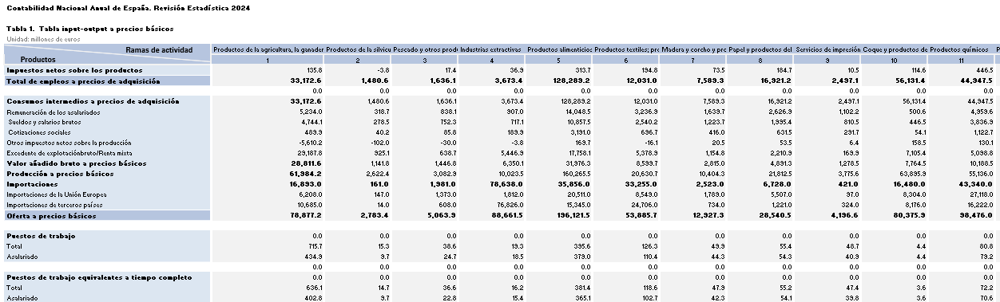

Cálculo del
Impacto Socioeconómico
Grupo ILUNION
Objetivo de la formación: entender qué es el impacto socioeconómico, cómo se calcula y cómo se desagrega en impacto directo, indirecto e inducido.
Comenzar la formación →Agenda de la formación
La sesión se organiza en 7 bloques de contenido, más un cierre con mensajes clave.
Impacto socioeconómico
Definición y desglose: impacto directo, indirecto e inducido. El efecto multiplicador y el efecto tractor.
Enfoque metodológico
Concepto, funcionamiento y outputs del modelo Input-Output: inversa de Leontief y multiplicadores.
KPIs del modelo
Los 6 grupos de indicadores y su desglose por género, plantilla con discapacidad y colectivos vulnerables.
Herramienta de medición
Arquitectura del Excel: inputs, tratamientos de datos (incluye transformaciones metodológicas), matrices I-O y resultados.
Ejemplo práctico del cálculo del impacto socioeconómico
Caso de uso funcional completo de impacto directo, indirecto, inducido y total consolidado con validaciones.
Resultados: presentación e interpretación de valores
Lectura de resultados con criterios de interpretación para diferenciar dato observado, estimación modelizada y proxy externa.
Supuestos metodológicos del modelo
Supuestos, límites y reglas de interpretación para preservar consistencia, comparabilidad y trazabilidad del modelo.
Mensajes clave
Síntesis final para uso autónomo de la herramienta y comunicación rigurosa del impacto socioeconómico.
¿Qué es el impacto socioeconómico?
Esta formación presenta la metodología desarrollada por NFQ Advisory para cuantificar el impacto socioeconómico del Grupo ILUNION, basada en un modelo Input-Output y una herramienta propia de modelización económica. Su objetivo es proporcionar un marco técnico sólido que facilite la comprensión del modelo, su correcta aplicación y la consistencia en futuras actualizaciones.
La herramienta mide de forma estructurada la contribución del Grupo ILUNION a la economía española, estimando impactos directos, indirectos e inducidos. Para ello, combina datos internos (empleo, salarios, compras, impuestos) con información macroeconómica oficial, generando métricas homogéneas y comparables de impacto económico.
Objetivo de la sesión
El objetivo de la formación es que las áreas del Grupo ILUNION comprendan el modelo de impacto socioeconómico de forma integral y puedan utilizar la herramienta con criterios homogéneos, garantizando la calidad de los datos de entrada, la correcta interpretación de los resultados y la consistencia metodológica entre ejercicios.
Definición de impacto socioeconómico
El impacto socioeconómico es la contribución total que una organización genera en la economía y en la sociedad a partir de su actividad. Incluye efectos directos, indirectos e inducidos, y se refleja en variables como empleo, valor añadido bruto, salarios, cotizaciones sociales e impuestos.
Los diferentes vectores de impacto
Impacto Directo
Actividad económica generada directamente por el Grupo ILUNION a través de su operación: empleo, salarios, valor añadido bruto y contribución fiscal.
Impacto Indirecto
Efectos generados en la cadena de suministro como consecuencia de las compras de bienes y servicios realizadas por el Grupo ILUNION a sus proveedores.
Si ILUNION compra X euros a cada sector de la economía española, ¿cuánta producción se activa en el conjunto del sistema productivo nacional?
Impacto Inducido
Efectos derivados del consumo privado generado por los salarios percibidos por los empleados directos del Grupo ILUNION.
Si una parte de los salarios de los empleados de ILUNION y de sus proveedores se destina al consumo, ¿cuánta producción adicional se activa en la economía española?
Impacto Total
Resultado agregado de la suma de los efectos directos, indirectos e inducidos, que refleja la contribución socioeconómica completa atribuible a la actividad del Grupo ILUNION.
📌 Líneas de negocio incluidas en el modelo
- Grupo ILUNION - Individual
- ILUNION Accesibilidad
- ILUNION Automoción
- ILUNION CEE CSC
- ILUNION Contact Center BPO
- ILUNION Economía Circular
- ILUNION Emprende
- ILUNION Facility Services
- ILUNION Fisioterapia y Salud
- ILUNION Formación
- ILUNION Fuego y Conducción
- ILUNION Hotels
- ILUNION Ibéricos de Azuaga
- ILUNION IT Services
- ILUNION Retail
- ILUNION Seguros
- ILUNION Servicios Industriales
- ILUNION TextilCare
- ILUNION VidaSénior
- ONCISA Inmobiliaria
🌍 Alcance geográfico del modelo
El alcance geográfico se circunscribe a España, dado que las matrices Input-Output empleadas corresponden a la estructura productiva de la economía nacional, procedentes de las matrices del Instituto Nacional de Estadística (INE).
Enfoque metodológico: matrices Input-Output y lógica de cálculo
El núcleo metodológico del modelo. Las matrices I-O del INE describen cómo se relacionan todos los sectores económicos en España. A partir de ellas se calculan los multiplicadores que transforman el gasto de ILUNION en impacto económico total.
El modelo ofrece resultados a distintos niveles de agregación: consolidado del Grupo, por línea de negocio y a nivel territorial.
Principales variables que calcula el modelo
A partir del modelo Input-Output se estiman, entre otras, las siguientes magnitudes de impacto:
- Valor Añadido Bruto (VAB)
- Empleo
- Salarios brutos
- Cotizaciones sociales
- Salarios y cotizaciones
- Impuestos
Cálculo del impacto directo
Variables de entrada para el impacto directo
El impacto directo se calcula con los datos internos reportados por el Grupo ILUNION, incluyendo empleo, remuneraciones, compras y variables fiscales del ejercicio analizado.
Este bloque recoge la contribución socioeconómica atribuible de forma inmediata a la actividad propia del Grupo, antes de estimar los efectos que se transmiten al resto del sistema productivo.
Cálculo del impacto indirecto e inducido
¿Qué son las Tablas I-O del INE?
Las Tablas Input-Output publicadas por el INE describen qué compra cada sector económico a los demás. Son la fotografía estadística de las relaciones de interdependencia productiva de la economía española y la base informativa sobre la que opera el modelo.

El modelo usa las tablas del INE como base para construir los coeficientes técnicos sectoriales y aplicar la lógica Input-Output en la estimación de impactos. A partir de esta estructura se calculan los efectos indirectos e inducidos asociados a la actividad del Grupo ILUNION.
Ajuste de precios: por qué y para qué
Como la matriz Input-Output está referida a un año base y los datos operativos del Grupo se reportan en euros corrientes del ejercicio analizado, el modelo aplica ajustes de precios para homogeneizar ambas bases monetarias. Primero convierte las magnitudes de entrada al año base de la matriz y, tras el cálculo, reexpresa los resultados al año del análisis. Este procedimiento evita sesgos en la estimación y permite una comparación temporal metodológicamente consistente.
¿Qué es la Inversa de Leontief?
Es la operación matemática central del modelo y se aplica directamente sobre los coeficientes derivados de las Tablas I-O. Permite calcular cuánta producción total se requiere en cada sector para satisfacer una unidad adicional de demanda final.
En términos prácticos, traduce la estructura sectorial observada en las tablas en multiplicadores de impacto económico.

Construcción de coeficientes a partir de las tablas del INE

A partir de las tablas Input-Output del INE, los coeficientes sectoriales se construyen como ratios sobre la producción sectorial:
🔢 Impacto indirecto — Cadena de suministro
▼| Elemento | Descripción |
|---|---|
| Qué captura | Los encadenamientos productivos en la cadena de suministro (efectos indirectos). |
| Cómo se calcula | Compras domésticas del Grupo ILUNION clasificadas por sector (CNAE/Producto) x matriz inversa de Leontief → producción indirecta por sector; sobre esa producción se aplican coeficientes técnicos para estimar empleo, VAB, salarios, cotizaciones y fiscalidad indirecta. |
| Resultado | Producción, empleo, VAB, salarios, cotizaciones y fiscalidad activados en los sectores proveedores. |
🔢 Impacto inducido — Consumo asociado a rentas salariales
▼| Elemento | Descripción |
|---|---|
| Qué captura | El circuito de retroalimentación del consumo privado (efectos inducidos). |
| Cómo se calcula | Masa salarial de empleados propios de ILUNION y de empleados de proveedores x propensión marginal al consumo (PMC) → distribución sectorial del consumo → impacto inducido por sector. |
| Resultado | Producción, empleo, VAB, salarios, cotizaciones y fiscalidad activados por el consumo asociado a la masa salarial de empleados propios y de proveedores. |
| Importante | Este bloque recoge el efecto económico adicional generado por el gasto de los hogares, complementando el impacto indirecto de la cadena de suministro. |
Nota: en este contexto, la propensión marginal al consumo (PMC) se corresponde con el patrón de gasto de los hogares, habitualmente denominado "cesta de la compra".
📊 ¿Qué outputs generan las matrices I-O?
▼| Variable | Tipo de impacto | Definición |
|---|---|---|
| Producción total | Indirecto + Inducido | Producción económica activada en la cadena de suministro y por el consumo asociado a la masa salarial de empleados propios y de proveedores. |
| VAB | Indirecto + Inducido | Valor añadido bruto estimado en ambos vectores de impacto. |
| Salarios incluyendo cotizaciones sociales | Indirecto + Inducido | Remuneración total del trabajo estimada en los dos componentes. |
| Salarios brutos | Indirecto + Inducido | Masa salarial bruta asociada a la actividad económica activada. |
| Cotizaciones sociales | Indirecto + Inducido | Aportaciones sociales vinculadas al empleo generado en ambos efectos. |
| Empleo | Indirecto + Inducido | Empleo equivalente a tiempo completo estimado en la cadena de suministro y en el consumo inducido. |
Herramienta de medición: pestañas y tipología
La herramienta se estructura en cuatro bloques funcionales interdependientes. La correcta delimitación entre hojas de entrada, transformación, cálculo y resultados es un requisito metodológico para preservar la consistencia del modelo.
Únicas hojas que requieren intervención del usuario en cada ciclo anual.

Estas pestañas aplican las transformaciones metodológicas necesarias para la correcta implementación de las matrices Input-Output, incluyendo clasificación sectorial, ajustes de estructura de compras y preparación de variables para el cálculo de impactos indirectos e inducidos.

Detalle de transformaciones metodológicas
Datos de empleo
▼| Tipo de variable | Aplicación |
|---|---|
| Normalizadas | División, línea de negocio, género, FTE, comunidad autónoma, país, discapacidad y colectivo vulnerable. |
| Derivadas | Salario digno territorial asignado, brecha de salario digno, excedente de salario digno e indicador de superación del umbral. |
Datos de compras
▼| Variable de tratamiento | Uso en el modelo |
|---|---|
| Tipo de compra y origen geográfico | Diferencia compras domésticas, importaciones e intragrupo. |
| CNAE proveedor / actividad comprada | Permite la correspondencia con rama Input-Output. |
| Producto / rama Input-Output | Construye el vector sectorial de compras. |
| Proveedor estratégico/crítico | Habilita cortes analíticos específicos de la cadena de suministro. |
| Importe y geografía | Base monetaria del shock y territorialización. |
Criterio metodológico: solo las compras domésticas clasificadas y trazables alimentan el impacto indirecto; las importaciones se reportan aparte y las compras sin CNAE/rama/geografía suficiente quedan fuera del shock Input-Output hasta su correcta clasificación.
Datos fiscales
▼Se incorporan variables de clasificación y cruce para explotar los datos por línea, periodo y rama sectorial, manteniendo la trazabilidad de las partidas fiscales y económicas reportadas.
| Ámbito | Partidas principales |
|---|---|
| Económico | Importe neto de cifra de negocios, variación de existencias, otros ingresos, aprovisionamientos y otros gastos de explotación. |
| Fiscal | Impuesto sobre Sociedades, Seguridad Social a cargo de la empresa, retenciones IRPF, IVA repercutido/soportado, IBI e impuestos y tasas ligados a la actividad. |
Datos de seguridad y salud
▼| Variables tratadas | Uso en el modelo |
|---|---|
| Índice de gravedad (referencia y actual), horas trabajadas, coste unitario de día de baja y factor territorial. | Estimación y monetización del coste público potencialmente evitado (o coste adicional estimado) asociado a la variación de siniestralidad. |
Interpretación del signo: si la siniestralidad baja, se interpreta como coste potencialmente evitado; si sube, puede generar un coste adicional estimado.
Datos medioambientales
▼| Variable | Tratamiento aplicado |
|---|---|
| Emisiones GEI (totales y alcances 1, 2 y 3) | Estandarización, validación y estructuración de series para su uso consistente en el cálculo de indicadores ambientales. |
| Electricidad renovable | Estandarización, validación y estructuración de magnitudes energéticas para su tratamiento consistente en el modelo. |
| Consumo hídrico | Estandarización, validación y estructuración de unidades de consumo para su tratamiento consistente en el modelo. |
Nota metodológica: en este bloque se preparan y estructuran los datos. La estimación y monetización final de indicadores ambientales se presenta en la hoja de Resultados.
Fuentes externas y controles de calidad
▼| Bloque | Contenido metodológico |
|---|---|
| Fuentes externas | Deflactores, matrices Input-Output, propensión marginal al consumo, distribución sectorial del consumo, salario digno territorial, coste social del carbono, factor mix eléctrico, tipo de cambio, precio unitario del agua, coste unitario de baja y otros parámetros de referencia. |
| Control de calidad | Validación de campos obligatorios, coherencia de unidades y periodos, consistencia de clasificaciones (CNAE/rama/geografía), trazabilidad de cambios y documentación de supuestos aplicados. |
Todos los parámetros externos deben actualizarse y documentarse con fuente, año de referencia y fecha de actualización para preservar comparabilidad interanual.
Hojas de soporte técnico para las matrices y operaciones internas del modelo.

En esta hoja se presentan los resultados finales del modelo, incluyendo los KPIs calculados automáticamente a partir de los datos y parámetros metodológicos.


Flujo de cálculo automático: 6 etapas
Introducir datos internos
El usuario actualiza las 6 hojas de Inputs con datos del ejercicio analizado
Asignación sectorial
Compras clasificadas por CNAE + parámetros metodológicos aplicados
Cálculo impacto directo
KPIs directos desde datos internos del Grupo: empleo, VAB, fiscalidad
Cálculo del impacto indirecto
Aplicación de coeficientes sectoriales al vector de producción asociado a compras.
Cálculo del impacto inducido
Aplicación de coeficientes sectoriales al vector de consumo derivado de la masa salarial de empleados propios de ILUNION y de empleados de sus proveedores.
KPIs consolidados
Resultados por categoría, tipo de impacto, colectivo, línea y periodo
Consideraciones metodológicas transversales
Modularidad
Estructura por bloques funcionales independientes. Permite actualizar inputs, parámetros o salidas sin alterar la lógica completa, reduciendo riesgo de propagación de errores.
Separación de roles
Distingue hojas de carga de usuario, hojas metodológicas de cálculo y hojas de resultados. Esta separación protege el motor analítico y mejora la gobernanza del proceso.
Actualización periódica
El diseño permite actualizar el modelo por ejercicio sustituyendo datos y parámetros sin reconfigurar fórmulas estructurales, preservando continuidad metodológica.
Comparabilidad
Los outputs se generan con definiciones homogéneas por categoría, tipo de impacto y periodo, facilitando comparaciones consistentes entre ejercicios y líneas de negocio.
KPIs del modelo y su desglose
El modelo combina un núcleo de KPIs troncales de impacto socioeconómico con categorías específicas de desglose, permitiendo una lectura integral y consistente de los resultados.
KPIs troncales del modelo de cálculo de impacto socioeconómico
Efecto tractor
El efecto tractor mide cuánto impacto adicional se genera en la economía por cada unidad de impacto directo de ILUNION.
Por ejemplo, si ILUNION genera empleo directo, ese empleo también puede generar más empleo en proveedores, en empresas que suministran a esos proveedores y en sectores donde los trabajadores gastan parte de sus salarios.
Contribución al PIB mediante VAB
Aproximación al PIB a través del Valor Añadido Bruto generado
Empleo generado en FTE
Empleo total expresado en equivalentes a tiempo completo
Remuneración total del trabajo
Compensación laboral agregada vinculada a la actividad
Sueldos y salarios brutos
Retribuciones brutas salariales asociadas al empleo generado
Cotizaciones sociales
Aportaciones a la Seguridad Social derivadas de la actividad
Contribución fiscal e impuestos netos
Fiscalidad total y otros impuestos netos sobre la producción
Detalle metodológico de KPIs troncales
🔁 Efecto tractor — Indicador multiplicador de la actividad
▼Expresa cuántas unidades de impacto total se asocian por cada unidad de impacto de referencia, considerando la agregación de los vectores directo, indirecto e inducido. Permite interpretar la capacidad de arrastre de la actividad de ILUNION sobre el resto del sistema económico.
Efecto tractor total = Impacto total / Impacto directo
🏗️ Contribución al PIB mediante VAB
▼Cuantifica la aportación económica del modelo a través del Valor Añadido Bruto generado por los impactos directo, indirecto e inducido, como aproximación consistente a la contribución al PIB.
🧮 Empleo generado en FTE
▼Mide el empleo asociado a la actividad en equivalentes a tiempo completo (FTE), diferenciando empleo directo, empleo indirecto en cadena de suministro y empleo inducido por el consumo asociado a la masa salarial de empleados propios y de proveedores.
💼 Remuneración total del trabajo
▼Recoge la compensación laboral agregada atribuible a la actividad económica modelizada, desagregada en componentes directos, indirectos e inducidos, e incluyendo sueldos, salarios y otros componentes de la remuneración del trabajo.
💵 Sueldos y salarios brutos
▼Refleja la masa salarial bruta vinculada a la actividad, con lectura por impacto directo, indirecto e inducido, como variable base para interpretar el impacto laboral y los efectos de consumo asociados a la masa salarial de empleados propios y de proveedores.
🛡️ Cotizaciones sociales
▼Incluye las aportaciones sociales asociadas al empleo generado en los tres vectores de impacto (directo, indirecto e inducido), como componente troncal para estimar la contribución al sistema de protección social.
🧾 Contribución fiscal e impuestos netos
▼Integra la contribución fiscal y otros impuestos netos sobre la producción asociados a la actividad, diferenciando el componente directo y los impactos indirecto e inducido estimados en el resto de la economía.
Categorías específicas de KPIs
KPIs asociados al empleo inclusivo
Indicadores vinculados al volumen, composición y calidad del empleo generado por la actividad del Grupo ILUNION, incluyendo empleo de personas con discapacidad, otros colectivos con barreras de empleabilidad, salario digno y empleo femenino.
KPIs de brecha salarial
Indicadores orientados a medir diferencias salariales en colectivos clave, incluyendo brecha salarial de género, brecha salarial de personas con discapacidad y brecha salarial de colectivos vulnerables
KPIs de impacto económico y cadena de suministro
Indicadores orientados a medir el impacto económico en la cadena de suministro y las variables de entrada que estructuran el cálculo del impacto indirecto en el modelo Input-Output.
KPIs vinculados al coste público evitado
Indicadores que estiman costes públicos o socioeconómicos potencialmente evitados asociados a la integración laboral de colectivos vulnerables, la estabilidad en el empleo y la reducción de bajas laborales o siniestralidad
KPIs de contribución socioambiental
Indicadores monetizados asociados a determinadas variables ambientales, como emisiones de gases de efecto invernadero, consumo de electricidad renovable, consumo hídrico y otros impactos ambientales seleccionados.
👥 KPIs asociados al empleo inclusivo
▼Dimensión más singular del modelo, coherente con el posicionamiento de ILUNION como empresa social. Integra tres subcategorías: personas con discapacidad, género y en colectivos vulnerables. Se calculan en los tres niveles de impacto.
| Indicador | Tipo de impacto | Definición |
|---|---|---|
| Empleo en colectivos con discapacidad atribuible a la actividad | Directo + Indirecto + Inducido | Empleo total asociado a personas con discapacidad atribuible a la actividad del Grupo ILUNION, calculado como suma del impacto directo, indirecto e inducido. Este indicador actúa como métrica agregada de síntesis. |
| Empleo con salario digno atribuible a la actividad | Directo | Empleo directo del Grupo ILUNION cuya remuneración bruta anual normalizada por FTE supera el umbral de salario digno aplicable al territorio y ejercicio analizado. |
| Porcentaje de trabajadores que superan el salario digno | Directo | Porcentaje de trabajadores directos del Grupo ILUNION cuya remuneración bruta anual normalizada por FTE supera el umbral de salario digno, calculado sobre el total de la plantilla directa considerada en el modelo. |
| Brecha de salario digno | Directo | Diferencia entre el umbral de salario digno aplicable y la remuneración bruta anual normalizada por FTE de los trabajadores que no alcanzan dicho umbral. |
| Empleo femenino generado atribuible a la actividad | Directo + Indirecto + Inducido | Empleo total femenino atribuible a la actividad del Grupo ILUNION, calculado como suma del impacto directo, indirecto e inducido. Este indicador actúa como métrica agregada de síntesis. |
⚖️ KPIs de brecha salarial
▼Miden diferencias salariales en colectivos clave mediante comparación con referencias de mercado y umbrales metodológicos definidos. Son indicadores de impacto directo asociados a la política retributiva e inclusiva del Grupo.
| KPI | Tipo de impacto | Definición |
|---|---|---|
| Reducción de la brecha salarial de género atribuible al empleo | Directo | Estimación de la reducción de la diferencia salarial entre mujeres y hombres dentro del empleo directo del Grupo ILUNION, calculada a partir de datos internos de remuneración, género y empleo equivalente a tiempo completo. |
| Reducción de la brecha salarial de las personas con discapacidad atribuible al empleo | Directo | Estimación de la reducción de la diferencia salarial entre personas con discapacidad y personas sin discapacidad dentro del empleo directo del Grupo ILUNION, calculada a partir de datos internos de remuneración, discapacidad reconocida y empleo equivalente a tiempo completo. |
| Reducción de la brecha salarial de los colectivos vulnerables atribuible al empleo | Directo | Estimación de la reducción de la diferencia salarial entre personas pertenecientes a colectivos vulnerables y el resto de la plantilla directa del Grupo ILUNION, calculada a partir de datos internos de remuneración, identificación del colectivo y empleo equivalente a tiempo completo. |
📈 KPIs de impacto económico y cadena de suministro
▼Indicadores orientados a medir el impacto económico en la cadena de suministro y las variables de entrada que estructuran el cálculo del impacto indirecto en el modelo Input-Output.
| KPI | Tipo de impacto | Definición |
|---|---|---|
| Empleo indirecto en la cadena de suministro | Indirecto | Empleo equivalente a tiempo completo estimado en la cadena de suministro como consecuencia de las compras domésticas realizadas por el Grupo ILUNION. |
| Volumen de compras totales realizadas en España | Indirecto / variable de entrada | Importe de compras domésticas realizadas en España, utilizado como shock principal para el cálculo del impacto indirecto. No constituye por sí mismo un impacto económico final. |
| Volumen de importaciones totales | Variable de contexto | Importe de compras importadas asociadas a la actividad. Se reporta de forma separada, ya que no genera impacto doméstico bajo el modelo Input-Output interior utilizado. |
| Volumen de compras totales | Variable de entrada / trazabilidad | Suma de compras domésticas e importaciones. Sirve para caracterizar el volumen total de aprovisionamientos, pero no debe utilizarse íntegramente como shock doméstico de impacto indirecto. |
| Empleo generado en proveedores estratégicos atribuible a las compras realizadas | Indirecto | Empleo estimado asociado a las compras realizadas a proveedores clasificados como estratégicos, cuando la información disponible permite su identificación y tratamiento diferenciado. |
| Volumen de compras en proveedores estratégicos en España | Indirecto / variable de entrada | Importe de compras domésticas realizadas a proveedores estratégicos en España identificados en Achilles-GoSupply. Sirve como base de cálculo o contextualización del impacto asociado a este grupo de proveedores. |
| Empleo generado en proveedores críticos atribuible a las compras realizadas | Indirecto | Empleo estimado asociado a las compras realizadas a proveedores clasificados como críticos, cuando la información disponible permite su identificación y tratamiento diferenciado. |
| Volumen de compras en proveedores críticos en España | Indirecto / variable de entrada | Importe de compras domésticas realizadas a proveedores críticos en España identificados en Achilles-GoSupply. Sirve como base de cálculo o contextualización del impacto asociado a este grupo de proveedores. |
💶 KPIs vinculados al coste público evitado
▼Estiman el ahorro potencial en gasto público derivado de la integración laboral de colectivos vulnerables y de las políticas de PRL. Son exclusivamente de impacto directo.
| KPI | Tipo de impacto | Definición |
|---|---|---|
| Coste público evitado por estabilización de colectivos vulnerables | Directo | Ahorro en prestaciones por desempleo, subsidios de inserción y servicios sociales especializados por la integración laboral estable de personas vulnerables. |
| Coste público evitado por reducción de accidentes laborales | Directo | Costes sanitarios y prestacionales evitados gracias a las políticas de prevención de riesgos del Grupo. |
🌿 KPIs de contribución socioambiental
▼Monetizan el impacto ambiental aplicando el Coste Social del Carbono y precios de referencia para agua y residuos.
| KPI | Tipo de impacto | Definición |
|---|---|---|
| Coste social evitado por reducción de emisiones totales | Directo | Valor monetizado de la reducción total de emisiones de GEI atribuible al Grupo, calculado aplicando el Coste Social del Carbono sobre las toneladas de CO2eq evitadas. |
| Coste social evitado por reducción de emisiones Alcance 1 | Directo | Valor monetizado de las emisiones directas evitadas en fuentes bajo control operativo del Grupo (combustión, flota, procesos y otras emisiones directas). |
| Coste social evitado por reducción de emisiones Alcance 2 | Directo | Valor monetizado de las emisiones indirectas evitadas asociadas a la electricidad y energía adquirida y consumida por el Grupo. |
| Coste social evitado por reducción de emisiones Alcance 3 | Directo | Valor monetizado de las emisiones indirectas evitadas de la cadena de valor (proveedores, logística, desplazamientos y otros conceptos metodológicamente incluidos en Alcance 3). |
| Coste social evitado por consumo de electricidad renovable | Directo | Valor monetizado del beneficio ambiental asociado a la sustitución de consumo eléctrico convencional por electricidad de origen renovable. |
| Coste evitado por reducción del consumo hídrico | Directo | Valor monetizado del ahorro de agua derivado de medidas de eficiencia hídrica, aplicando el precio de referencia por unidad de consumo evitado. |
🔍 Desagregación especial en ILUNION
La mayoría de los KPIs de empleo se desagregan por tres dimensiones: género (hombre/mujer), discapacidad (sí/no) y colectivo vulnerable (incluye colectivo trans, étnico-racial, personas refugiadas, víctimas de violencia de género, internos en centros penitenciarios, entre otros). Esta desagregación es el diferencial metodológico del modelo para ILUNION.
Ejemplo práctico del cálculo del impacto socioeconómico del Grupo ILUNION
En este bloque se muestra, de forma aplicada, cómo se calcula el impacto socioeconómico del Grupo ILUNION a partir de datos de entrada reales. Se recorre el proceso completo de cálculo de impactos directos, indirectos e inducidos y se explica cómo interpretar los resultados obtenidos en empleo, VAB, salarios, cotizaciones e impacto fiscal.
Tipología de dato en este módulo
Dato observado: inputs directos internos. Estimación modelizada: resultados indirectos e inducidos por modelo I-O. Proxy externa: parámetros como PMC, % discapacidad de referencia, coste social del carbono o tipo de cambio.
Resultados: presentación e interpretación de valores
Este bloque establece cómo interpretar los resultados del modelo con rigor: qué parte corresponde a dato observado, qué parte es estimación metodológica y qué límites deben explicitarse en cualquier lectura o comunicación del impacto.
El impacto directo se apoya en datos observados y verificables
Se estima a partir de información interna reportada por ILUNION para el ejercicio analizado (nóminas, registros de empleo, declaraciones fiscales y estados contables), sujeta a controles de coherencia, periodificación y trazabilidad documental. En términos relativos, ofrece una base de lectura más directa que el impacto indirecto e inducido, aunque su interpretación también depende del perímetro, la cobertura y los criterios metodológicos aplicados en cada ejercicio.
Los efectos indirecto e inducido son estimaciones metodológicas
Se basan en multiplicadores económicos derivados de las tablas I-O del INE. Son sólidos metodológicamente y ampliamente usados a nivel internacional, pero no son cifras contables verificables individualmente.
Interpretaciones correctas vs. incorrectas
| ✓ Puedes decir esto | ✗ No puedes decir esto |
|---|---|
| "ILUNION contribuye al mantenimiento de X puestos de trabajo en la economía española, incluyendo su cadena de suministro." | "ILUNION crea X empleos en la economía española." (El modelo estima empleos sostenidos, no necesariamente nuevos.) |
| "La actividad de ILUNION está asociada a una contribución fiscal total estimada de X millones de euros." | "ILUNION paga X millones en impuestos." (Solo el impacto directo son pagos reales; los indirectos e inducidos son estimados.) |
| "Por cada euro de VAB directo de ILUNION, se generan X euros en total en la economía (efecto tractor)." | "Sin ILUNION, la economía española perdería exactamente X euros de PIB." (El modelo no es un contrafactual.) |
| "Los KPIs de coste evitado reflejan un ahorro potencial estimado para las administraciones públicas." | "ILUNION ahorra al Estado X euros." (Es una estimación con supuestos metodológicos explícitos, no una transferencia verificada.) |
| "El modelo muestra una tendencia positiva en la contribución fiscal entre 2022 y 2024, una vez aplicados los deflactores consistentes." | "Los resultados de 2022 y 2024 son directamente comparables." (Solo lo son si usan el mismo año base y deflactores coherentes.) |
Estructura de la hoja de Resultados
📋 Ejes de desagregación disponibles
Los KPIs se presentan desagregados por: tipo de impacto (directo / indirecto / inducido / total), categoría (empleo, brecha, fiscal, VAB, coste evitado, socioambiental), colectivo (género, discapacidad, vulnerabilidad), línea de negocio (24 unidades) y periodo (ejercicio o acumulado).
💡 Insight: el efecto tractor como argumento estratégico
Un efecto tractor alto refuerza que ILUNION no es solo una empresa generadora de empleo directo: es un dinamizador del ecosistema económico español. Especialmente relevante en líneas de negocio con alto volumen de compras a proveedores locales.
Criterios, supuestos y reglas de interpretación del modelo
Este bloque sintetiza el Anexo C del documento metodológico. Los supuestos aquí recogidos delimitan qué mide el modelo, cómo lo estima y bajo qué criterios deben interpretarse los resultados.
Perímetro de cálculo
El impacto indirecto se estima sobre compras domésticas trazables y clasificadas sectorialmente.
Ajuste de precios
Las magnitudes se convierten al año base de la matriz I-O y luego se reexpresan al año de análisis.
Control de doble contabilización
Las compras intragrupo se excluyen en consolidado para evitar sobreestimación de impactos.
Interpretación de resultados
Debe diferenciarse entre dato observado, imputación territorial y estimación modelizada.
| Ámbito | Supuesto clave | Implicación práctica |
|---|---|---|
| Compras | Solo compras domésticas trazables y clasificadas alimentan el impacto indirecto. | La cobertura y calidad de Achilles-GoSupply condicionan el resultado. |
| Temporal | Se usa la matriz I-O más reciente disponible como base. | La comparabilidad interanual exige mantener trazabilidad del año base. |
| Ajuste de precios | Se aplica homogeneización monetaria entre año base de matriz y año analizado. | Evita sesgos al aplicar multiplicadores sobre magnitudes no comparables. |
| Territorial | Cuando no hay dato regional observado, se territorializa por peso FTE. | El resultado regional es imputado, no liquidación efectiva territorial. |
| Interpretación | Se distinguen datos observados, resultados imputados y resultados modelizados. | Evita confundir evidencia directa con estimaciones económicas. |
C.1 Alcance de compras para impacto indirecto
▼Alcance aplicado
El impacto indirecto se calcula sobre compras registradas y clasificadas en Achilles-GoSupply con información mínima de CNAE/rama y geografía.
Implicación operativa
Las compras no trazables o sin clasificación suficiente quedan fuera del shock Input-Output.
Criterio metodológico
Solo compras domésticas trazables y sectorizadas.
Escalado recomendado
Aumentar cobertura de proveedores, CNAE y geografía para ampliar representatividad.
C.2 Clasificación sectorial de proveedores
▼Regla de clasificación
Cada compra se asigna a rama sectorial Input-Output mediante CNAE o equivalencia metodológica.
Criterio de prioridad
En proveedores diversificados, prevalece la actividad efectivamente contratada frente al CNAE societario genérico.
Exclusiones metodológicas
Los proveedores que no puedan clasificarse con fiabilidad por CNAE y geografía quedan excluidos del cálculo de impacto indirecto hasta su correcta trazabilidad.
Control recomendado
Tabla de correspondencia documentada y revisión periódica de proveedores de alto volumen.
C.3 Compras domésticas e importaciones
▼| Elemento | Tratamiento | Lectura correcta |
|---|---|---|
| Compras domésticas | Se incorporan al shock Input-Output nacional. | Activan producción interior e impacto indirecto nacional. |
| Importaciones | Se reportan aparte como variable de contexto. | No generan impacto indirecto nacional bajo la matriz interior. |
C.4 Tratamiento de compras intragrupo
▼| Nivel de análisis | Tratamiento intragrupo | Justificación |
|---|---|---|
| Línea de negocio | Puede incluirse como aprovisionamiento efectivo. | Permite reflejar la operativa interna de la línea analizada. |
| Consolidado Grupo | Se excluye del shock indirecto. | Evita doble contabilización entre impacto directo e indirecto interno. |
Control: registrar entidad compradora/proveedora, importe y tratamiento aplicado en cada ejercicio.
C.5 Territorialización de resultados
▼| Aspecto | Interpretación metodológica |
|---|---|
| Uso | Permite lectura regional cuando no hay dato económico territorial detallado. |
| Límite | Es una aproximación metodológica y no equivale a liquidación fiscal o producción observada en territorio. |
C.6 Umbral de salario digno
▼| Aspecto | Aplicación metodológica |
|---|---|
| Base de cálculo | Solo empleo directo, con umbral territorial por comunidad y comparación en base homogénea (salario bruto anual comparable y FTE). |
| Criterio | No se aplica salario digno a empleo indirecto o inducido por falta de microdato salarial. |
| Regla de brecha | La brecha considera únicamente diferencias positivas respecto al umbral aplicable. |
C.7 Ajuste temporal y matrices Input-Output
▼Supuesto
Estabilidad relativa de la estructura intersectorial en el corto plazo.
Control
Actualizar anualmente deflactores y documentar todos los factores de conversión.
C.8 Fuentes externas y actualización de parámetros
▼| Parámetros externos | Requisito |
|---|---|
| Deflactores, matrices IO, PMC y distribución de consumo | Actualizar periódicamente y registrar trazabilidad. |
| Salario digno, coste social del carbono, factor mix eléctrico, precio del agua | Mantener coherencia temporal y documental entre ejercicios. |
Trazabilidad mínima
Fuente, año de referencia, fecha de actualización y criterio de uso.
Riesgo
Cambios no documentados rompen la comparabilidad interanual.
C.9 Interpretación de resultados modelizados
▼La lectura de resultados debe diferenciar entre dato observado, estimación modelizada e indicador monetizado.
| Tipo de resultado | Interpretación |
|---|---|
| Dato directo observado | Información interna reportada por ILUNION. |
| Dato territorializado | Resultado imputado por criterio de reparto (habitualmente FTE). |
| Impacto indirecto | Estimación Input-Output basada en compras domésticas sectorizadas. |
| Impacto inducido | Estimación Input-Output basada en consumo salarial directo e indirecto. |
| Coste evitado | Monetización de escenario contrafactual o variación observada. |
| Impacto ambiental monetizado | Valoración económica de una reducción o variación ambiental. |
Lo que debes llevarte de esta formación
Cuatro ideas que resumen por qué este modelo importa y cómo usarlo bien.